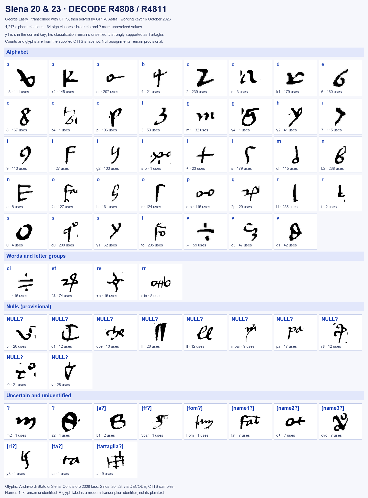

Royal military correspondence · Siena collection · year unknown · partial
Siena 20 and 23: orders for the Marche and a captain’s grievance
George Lasry’s partial decipherments recover two documents under one key, with an illustrated working key, his English translations and a qualified historical context.
A letter from Perugia to an unidentified king, dated 30 March without a year, and two royal memoranda for envoys, with an arrival deadline of 4 May.
Where
Archivio di Stato di Siena, Concistoro 2308 fasc. 2 nos. 20 and 23; DECODE R4808 and R4811.
The cipher
Homophonic graphical substitution, word/letter-group and name signs, provisional nulls. 4,247 cipher selections across the two documents.
How the key was recovered
Transcribed with CTTS, then solved by GPT-6 Astra. Recovery used ciphertext patterns and original cleartext framing, without a historical decipherment or matching archive key.
What the texts concern
Guarding the Marche passes, military coordination, a payment of 1,000 ducats, and a captain’s intention to retaliate against an enemy.
Still open
Three personal-name codes, several readings and sign classes, the year and precise historical identities. Assignment coverage is not a claim of complete intelligibility.
Credit
George Lasry directed the work and supplied the Italian readings, English translations and current working material. Transcribed with CTTS, then solved by GPT-6 Astra. The context and contribution checks are described below.
01 The documents and working key
The contributor’s Letter 1 is no. 23 (R4811); Letter 2 is no. 20 (R4808). They use one shared key. Other ciphers in this bundle are discussed in the collection survey; nos. 6 and 24 have a different cipher, with their own page.
The current transcription has 1,045 cipher selections in 16 rows for no. 20 and 3,202 in 54 rows for no. 23. Eleven punctuation or clear-script selections are excluded. The key has 39 letter assignments (maximum five vowel and three consonant homophones), four word/letter-group values, ten provisional null classes, nine bracketed assignments and two unmapped classes. Four apparent personal-name codes include Tartaglia and three unidentified names.
Of 4,074 non-null cipher occurrences, 4,033 have unbracketed assignments (98.99%); this is assignment coverage only. Mixed classes and editorial restorations remain, so no meaningful-reading percentage is claimed. Both editions are partial.

The current key, including the unresolved fork-sign h/s classification. Brackets and question marks are retained. HTML key. Image: George Lasry’s working key and CTTS glyph samples from Archivio di Stato di Siena, Concistoro 2308 fasc. 2 nos. 20 and 23, via DECODE R4808/R4811; chart regenerated for this contribution.
02 A three-line mechanical check
No. 23, CTTS L49 item 39 through L51 item 24: 108 signs, 109 letters. Nulls are omitted; word spacing, punctuation, accents and u/v follow the supplied edition. No letters are substituted or gaps filled. This passage was selected for agreement; it does not validate the complete readings. It is the only mechanical excerpt included.
habelmente et tosto venire a lo re,
li manda per lo dicto messer Francisco ducati mille;
et inperò deieli li dicti dinari et faccia con
03 No. 23 (R4811): the memoranda
Supplied Italian reading. Uncertainties and lacunae are retained verbatim.
Memoriale Iacobo Spinelo ituro ad Marchiam. In primis lo dicto Iacobo dica a [Tartaglia?] che lo re vole che ipso [Tartaglia?], una con Rodolfo, [Name3] et [Name2], con sollicitudine et virilitate et omne advisamento actendano che [Name1] non possa retornare né ensire indintro de la Marcha; et che, non obstante che lo re aia scripto a lo dicto [Tartaglia?] che lui personalmente non vada a dicta faccienda, lo re, mutato ordine et consiglio, vole che personalmente ce vada et piglie li passi d’Asculi, et faccia ben guardare li passi del Tronto et de Arquata et del Monte del Monaco et de l’altri lochi convicini che pareno a lui; et che faccia fama et nominata che ipso è andato a li dicti passi et lochi per dubio che le genti che so’ ne la Marcha non potessero ensire et venire et fare damno a le dicte terre et altri lochi del re, et per fare fornire lo lavoro del Tronto.
Et che dica al dicto [Tartaglia?] che sancia indugio se fornisca de ponere in puncto, che se lo re vole che ipso, con li prefati [Name3] et [Name2], con li homini de Rodolfo, vadano ad assaltare o a ponere campo a [Name1], possano senza alcuna dimora. Et advise lo dicto [Tartaglia?] che così sia ⟨…⟩ a dire a Rodolfo, a [Name3] et a [Name2], et che se intendano tucti insieme, che se [Name1] volesse passare per li passi di là, ad requisicione de Rodolfo, de [Name3] et de [Name2], possano tucti insieme essere adosso al dicto [Name1] et persequirelo; et così se venisse per passare da li dicti passi de [Tartaglia?]. Et a questo se intendano bene insieme et aiano bone spie che non possa falire, però che tucto lo facto sta in questo; et ⟨che⟩ comande li fanti in ciò che bisogna a questo facto et a fornire lo lavorio del Tronto; et che secretamente se intendano con li Malatesti circa hoc et non in aliis, et advisino se se lo potessero rompere a la scorta.
Item la simile ambasciata respective faccia a Rodolfo, [Name3] et a [Name2], et dica li che loro aiano guardare da li passi et lochi di là, che [Tartaglia?] guarda quili da qua; et che deiano nominata che [Name3] et [Name2], tanto perché [Name1] l’ave levati loro conpagni et è loro nemico, quanto che né ⟨…⟩ messer Ludovico né li Malatesti potessero offendere li coligati et fidili de re, so’ andati là.
Item lo dicto Iacobo dica o scriva a lo dicto [Name2] che, ad requesta de Rodolfo et de [Name3], se deia trovare et congregare insembla con loro, secundo sarà requesto; et che nientimeno actenda ad reacquistare et rehavere le castela del contado de ⟨…⟩ occupate per li forausciti, con le cento quaranta lancie le quale Dominico de [Fom?], ad comandamento de lo re, ha lassate là per lo facto de le dicte castela.
Item che per fi’ a tanto che [Tartaglia?] non sarà andato a li predicti passi et lochi, gei non faccia partire da quele parte.
Item lo dicto Iacobo non se parta da la Marcha, anci stie là a solicitare li prenominati et a vedere et sentire ciò che se fa, et spesso significare a lo re le novele occurrente, et ad esequire ciò che per lo re li sarà scripto; et che sempre vada da l’uno a l’altro et da l’altro a l’uno a solicitare.
Memoriale domino Francisco Gactule de Neapoli ituro ad Tartaliam. In primis como lo [Tartaglia?] sarà andato a li passi d’Asculi et del Tronto, comande et dica da parte de lo re che subito, con tucta la soa conpagnia, co li fanti, carriagi et omne cosa, deia venire a campo a lo Maccione de le Rose, a la presencia del re, inperò che lo re, con consiglio de ⟨…⟩ et de l’altri capitanei che so’ qua, vole deliberare quello che ha a fare et cavalcare et fare campo, ita che ad tardius se trove a lo Maccione de le Rose per tucti li quactro iorni de maio.
Item lo predicto misser Francisco porta dinari per dare, anche se poccia levare et venire a la soa maiestà, como è ditto di sopra. Item dica anche che, non obstante che lo re non sia tenuto a dargli li dinari per mo, et ipso sia tenuto a venire a lo re, acciò che con tucta la soa conpagnia, carriagi, fanti et cose gei possa più habelmente et tosto venire a lo re, li manda per lo dicto messer Francisco ducati mille; et inperò deieli li dicti dinari et faccia con ⟨…⟩ che ipso, con tucta la soa conpagnia, carriagi, fanti et cose, ge venga a la soa maiestà ad tardius per tucti li quactro iorni de maio, ut superius dictum est, et recipiat promissionem ⟨…⟩ sub suo sigillo che deia venire ut supra.
English translation supplied by George Lasry
Memorandum for Iacobo Spinelo, who is going to the Marche.
First, the said Iacobo shall tell [Tartaglia?] that the King wishes that he [Tartaglia?], together with Rodolfo, [Name3] and [Name2], with diligence, vigour and every precaution, see to it that [Name1] can neither return to, nor get out of, the Marche. And although the King wrote to the said [Tartaglia?] that he should not go on this business in person, the King, having changed his orders and his counsel, now wants him to go there personally and take the passes of Ascoli, and have the passes of the Tronto, of Arquata, of Monte del Monaco, and of the other neighbouring places he sees fit, well guarded. He is to spread the word and let it be known that he has gone to these passes and places for fear that the troops in the Marche might get out, come and do damage to the said lands and other places of the King, and in order to have the works on the Tronto completed.
He shall also tell the said [Tartaglia?] to get ready without delay, so that, if the King wants him, with the aforesaid [Name3] and [Name2] and with Rodolfo’s men, to attack [Name1] or lay siege to him, they can do so without any delay. And he shall advise the said [Tartaglia?] that ⟨…⟩ is to be said to Rodolfo, [Name3] and [Name2], and that they must all act in concert, so that if [Name1] tried to cross by the passes over there, then at the request of Rodolfo, [Name3] and [Name2] they can all fall on the said [Name1] together and pursue him; and likewise if he came to cross by [Tartaglia?]’s passes. In this they must coordinate well and keep good spies, so that nothing can fail, since the whole affair depends on this. And he is to command the infantry in whatever this business requires and in completing the works on the Tronto. And they are to come to a secret understanding with the Malatesta on this matter and on nothing else, and report whether they could break him (or the escort) on the march.
Likewise, he shall deliver the same message to Rodolfo, [Name3] and [Name2], and tell them that they must guard the passes and places over there, while [Tartaglia?] guards those on this side. And they shall let it be said that [Name3] and [Name2] have gone there, both because [Name1] took their companions from them and is their enemy, and so that neither ⟨…⟩ Messer Ludovico nor the Malatesta could harm the King’s allies and loyal subjects.
Likewise, the said Iacobo shall tell or write to the said [Name2] that, at the request of Rodolfo and [Name3], he must meet and join forces with them, as he is asked. Nonetheless he shall attend to recovering and retaking the castles of the county of ⟨…⟩ occupied by the exiles, with the 140 lances that Dominico de [Fom?] left there by the King’s command for the business of those castles.
Likewise, until [Tartaglia?] has gone to the aforesaid passes and places, he is not to let them leave those parts.
Likewise, the said Iacobo shall not leave the Marche, but stay there to urge on the persons named above, to see and hear what is being done, and to report frequently to the King the news as it occurs, and to carry out whatever the King writes to him. And he shall keep going from one to the other and back, to urge them on.
Memorandum for Messer Francisco Gactula of Naples, who is going to Tartaglia.
First: as soon as [Tartaglia?] has gone to the passes of Ascoli and the Tronto, he shall order and tell him on the King’s behalf that he must immediately, with his whole company, infantry, baggage train and everything, come to camp at the Maccione delle Rose, in the King’s presence. For the King, with the counsel of ⟨…⟩ and of the other captains who are here, wishes to decide what he has to do, to ride out and take the field; so that he must be at the Maccione delle Rose by the fourth day of May at the latest.
Likewise, the aforesaid Messer Francisco carries money to hand over, so that he can set out and come to His Majesty, as stated above. He shall also say that, although the King is not obliged to give him money at present, and he is obliged to come to the King, the King nonetheless sends him 1,000 ducats through the said Messer Francisco, so that he can come to the King more easily and quickly with his whole company, baggage, infantry and gear. Therefore he shall give him the said money and see to it that he comes to His Majesty with his whole company, baggage, infantry and gear by the fourth day of May at the latest, as said above. And he shall receive his promise, under his seal, that he will come as stated above.
04 No. 20 (R4808): the letter from Perugia
Supplied Italian reading. Physical line-break hyphens and uncertain fragments are retained.
Sacra Regia Maiestas. Serenissime princeps ac metuendissime domine, ante terre pedum oscula. Secundo
⟨repo⟩ et de sapere: et secundo più volte v’ò scripto, el traditore de [Name1] per-
fin mo sempre s’è ingegniato vo[l]ere disfare me et levarme le mei terre e[t] la mia compagnia, et
perfin mo me ha tolto ⟨i⟩bendo cento cavali et m[ol]te vo[l]te, e ne ho facta querimonia a la
Re[gia Maiestà]?, et ha[v]ete me sempre confortato et promisso de operare con nostro Segnore che ques-
te cose cessaran[n]o, et mai non ⟨dessut⟩ [Name1] facto niente; anci il dicto traditore da ⟨ogni dì?⟩
sempre ha facto ⟨peio?⟩, che vegendo lui e[t] io [e]ssere [li] capitali inimici, me ho deliberato, se io [fo]-
sse certo che la Re[gia Maiestà] me facesse tagliare la testa, de fare a lui ⟨con tucto?⟩ lo mio potere quello che ip[so]?
ha voluto fare a mi. Et notifico ve che crai, a l’ultimo del presente, mi partirò da questa terra
et andirò ad trovar[lo]? ⟨…⟩ et farò contra de lui ciò che potrò, se mi
dovesse mectere a pericoloso partito; et ⟨s⟩pero? che ve a fiata; nanti li volo vedere per-
dere, ma io, la roba mia, che essere mi tolta omne dì a questo modo. De ⟨ogni?⟩ cosa ve certifico et aviso:
⟨…⟩ a terra et homini de ⟨…⟩ che s[ia]no, in persone ni in bestiame, farò novità a ⟨…⟩ veruna ma-
⟨…⟩ mia ⟨…⟩ pere scusati, che io ne disposto fare lo peggio che potrò ⟨…⟩, che como a-
quando io era in quelo de ⟨Name?⟩ se partì co la soa compagnia per mi voler trovare,
secundo ⟨…⟩ et tucto lo mondo sa. Scriptum Perusii die penultimo mensis Martii ⟨closing abbreviation⟩
⟨subscription, unread⟩
English translation supplied by George Lasry
Sacred Royal Majesty, Most Serene Prince and most dread Lord, after kissing the ground at your feet.
Secondly, ⟨…⟩ and as regards what you should know: as I have written to you several times, that traitor [Name1] has been striving all this time to ruin me and to take from me my lands and my company. Up to now he has taken from me, ⟨…⟩, a hundred horses, and many times. I have complained about it to the Royal Majesty(?), and you have always comforted me and promised to work with our Lord so that these things would cease. Yet [Name1] has never done anything ⟨…⟩; on the contrary, the said traitor has always behaved worse(?), ⟨from day to day?⟩.
So, seeing that he and I are mortal enemies, I have decided, even if I were certain that the Royal Majesty would have my head cut off, to do to him with all(?) my power what he has wanted to do to me.
And I inform you that tomorrow, on the last day of this month, I will leave this town and go to find him(?) ⟨…⟩, and I will do against him whatever I can, even if I had to put myself in a dangerous position. And I hope(?) that ⟨…⟩ at some point(?). I would rather see my goods lost than have them taken from me every day in this way.
Of ⟨every?⟩ matter I assure and inform you: ⟨…⟩ the land and men of ⟨…⟩, whoever they may be, whether in persons or in livestock, I will make no move against ⟨…⟩ any ⟨…⟩. ⟨…⟩ my ⟨…⟩, consider me excused, for I am resolved to do the worst I can ⟨…⟩, just as when I was in the territory of ⟨Name?⟩ he left with his company in order to come and find me, as ⟨…⟩ and all the world knows.
Written at Perugia, on the second-to-last day of March. ⟨closing abbreviation⟩
⟨subscription, unread⟩
05 Historical context
Proposed window: circa 1409–1414; narrower working hypothesis: 1412–1414. Neither is a recovered documentary date. The two texts need not have been written in the same year.
Internal evidence. The second memorandum’s alphabetic heading spells ad Tartaliam. Its body then addresses lo [#], a captain with his own company, infantry, baggage and seal, to whom 1,000 ducats are to be paid. This strongly supports # = Tartaglia; it is more than a guess based on the military setting. The supplied edition and key retain their uncertainty marks. Identifying that Tartaglia with a particular historical man is a separate step.
Likely setting, not an established date. Angelo da Lavello, known as Tartaglia, is a strong candidate. Treccani dates his death to 1421, while the detailed Condottieri di ventura chronology places his service with Ladislaus and his activity around Perugia and the Marche in the relevant period. If the identification is right, the underlying instructions predate his death; that does not independently date this physical copy, nor prove that both documents were written in the same year. Sources disagree on the month of his execution (Treccani: December; Condottieri: October), so no month is used as a dating anchor. Treccani; Condottieri di ventura.
Ladislaus is plausible. The scholarly biography of Ladislaus records his acceptance of Perugia’s lordship on 19 June 1408, its confirmation in the 1412 peace, and his death on 6 August 1414. The Rodolfo III da Varano biography documents Rodolfo’s alliance with Ladislaus in 1405–1414, including a pact in December 1408. Together these support a Ladislaus-era interpretation, with circa 1412–1414 a working hypothesis, not a recovered date; the broader years around 1409–1414 cannot yet be excluded. No conclusion follows merely from the local folder name “Siena1421.” Ladislaus, DBI; Rodolfo III, DBI.
Other identifications need restraint. “Messer Ludovico” may be Ludovico Migliorati of Fermo, but the chronology records conflict with Carlo Malatesta in 1412–1413 and a truce mediated by Rodolfo and Berardo da Varano. Mentioning Ludovico and the Malatesta together therefore does not establish that they were allies or fix the year. Francesco Gattola is a possible lead for Francisco Gactule: the DBI gives the variants Gattula and de Gactulis and connects the family with the royal court, but it does not identify this envoy or memorandum. Iacobo Spinelo and Names 1–3 remain unassigned. Migliorati chronology; Francesco Gattola, DBI.
Limits of this check. Focused searches for “Maccione de le Rose,” “Maccione delle Rose” and “Macchione delle Rose,” with Ladislaus and the named envoys, did not establish the camp’s location or locate these complete texts in a printed edition. This was a limited check, not an exhaustive search. The 4 May reference is an arrival deadline, not the date of the memorandum; 30 March is the letter’s day and month, not a year. The archive’s dating and provenance still need independent confirmation. No external historical passage was used to change the submitted decipherments.
06 Method, provenance and uncertainties
The 16 October local work records CTTS overlap/compound-sign review, comparison with earlier local seed assignments, and contextual reconstruction across no. 23, followed by application and further sign review on no. 20. George Lasry confirms that the cipher was transcribed with CTTS, then solved by GPT-6 Astra. Exact initial run settings are not reconstructed. The supplied readings remain partial; no first-publication claim is made.
The earlier collection survey records unsuccessful attempts on this pair. The new supplied readings supersede that outcome for these two documents only. Their wording is preserved; editorial restorations are not silently promoted to key values.
Names 1–3 remain unidentified. The bracketed b1, 3bar, Fom, y3 and ta values, unmapped s2/m2, fork-sign h/s distinction, null classes and compound segmentation remain open. The historical identifications are inferences. Tartaliam is alphabetically present in the heading; the inference that # names the same captain is strong internal evidence, separately from identifying him as Angelo da Lavello.
07 Sources
George Lasry’s supplied Italian editions, English translations and current CTTS working material, submitted 17 October 2026.
DECODE R4808 and R4811: Archivio di Stato di Siena, Concistoro 2308 fasc. 2 nos. 20 and 23.
Historical sources are linked beside each claim in section 05. No complete external plaintext was located in the limited check.
The repository folder contains the supplied readings and translations, working key, visual key, sign transcriptions, measured counts and reproducible short-excerpt check.